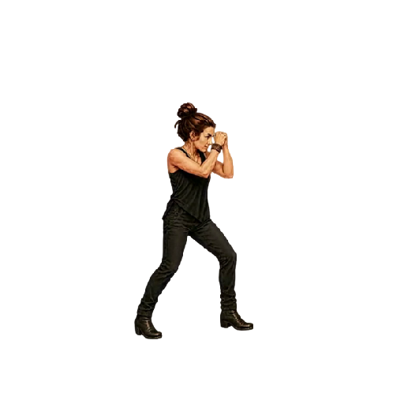
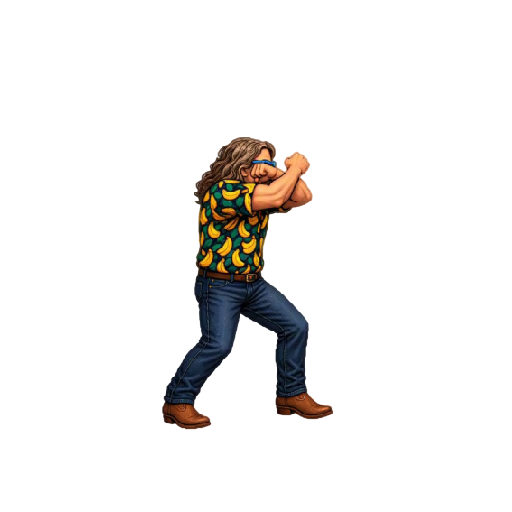
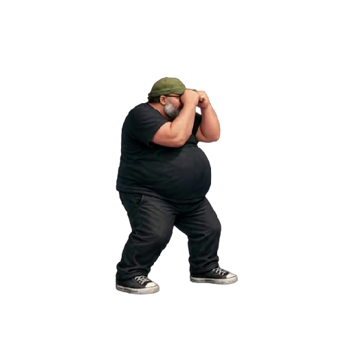
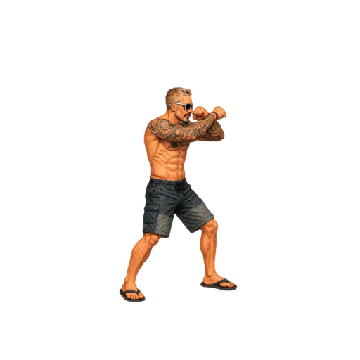
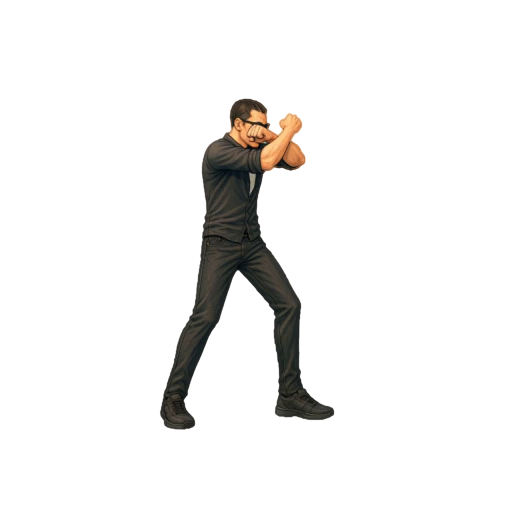
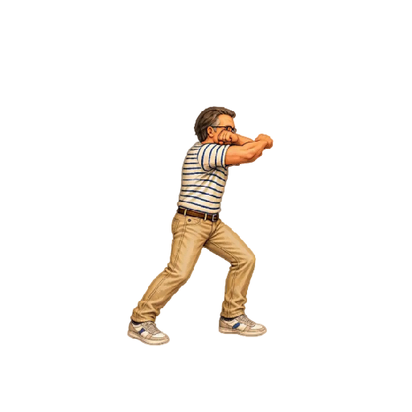
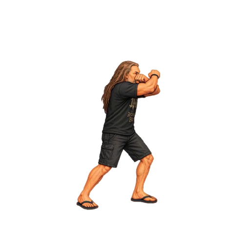

Timing Parata alta
Tutti i sette personaggi eseguono la sequenza in 250 ms (0,25 s) a velocità 1×. FPS = numero di frame × 4; ogni frame mantiene la propria posizione nello spritesheet e dura 250 / numero di frame millisecondi.
La durata comprende anche l’ultimo frame. Senza Loop la posa difensiva resta visibile al termine; con Loop il ciclo dura 250 ms. L’inizio della posa finale dipende dal numero di frame ed è riportato a parte: non è un impatto sincronizzato a 100 ms. Il ritorno dalla parata non è concatenato.
“Riproduci tutte” riallinea i player anche nei cicli successivi e con caricamento progressivo. A 0,5× la sequenza dura 500 ms; a 2× dura 125 ms. PNG, tagli, altezze in centimetri, scale e ancoraggi restano invariati; i timing Godot sono conservati come provenienza nel manifest.
Scarica CSV · Configurazione timing
| Personaggio | Posa finale | Frame | Durata | FPS demo | FPS Godot | Posa finale da | Note |
|---|---|---|---|---|---|---|---|
| Arianna |  | 16 | 250 ms | 64 | 48 | 234.38 ms | Frame sorgenti 1–16. |
| Bue |  | 10 | 250 ms | 40 | 24 | 225.00 ms | Frame sorgenti 1–10. |
| Mangler |  | 14 | 250 ms | 56 | 48 | 232.14 ms | Frame sorgenti 9–22. Scala Godot 0.85; correzione e altezza 183 cm conservate. |
| Mileto |  | 6 | 250 ms | 24 | 24 | 208.33 ms | Frame sorgenti 1–6. |
| Oscare |  | 10 | 250 ms | 40 | 24 | 225.00 ms | Frame sorgenti 1–10. |
| Peirò |  | 6 | 250 ms | 24 | 24 | 208.33 ms | Frame sorgenti 1–6. |
| Torpe |  | 9 | 250 ms | 36 | 24 | 222.22 ms | Frame sorgenti 1–9. |